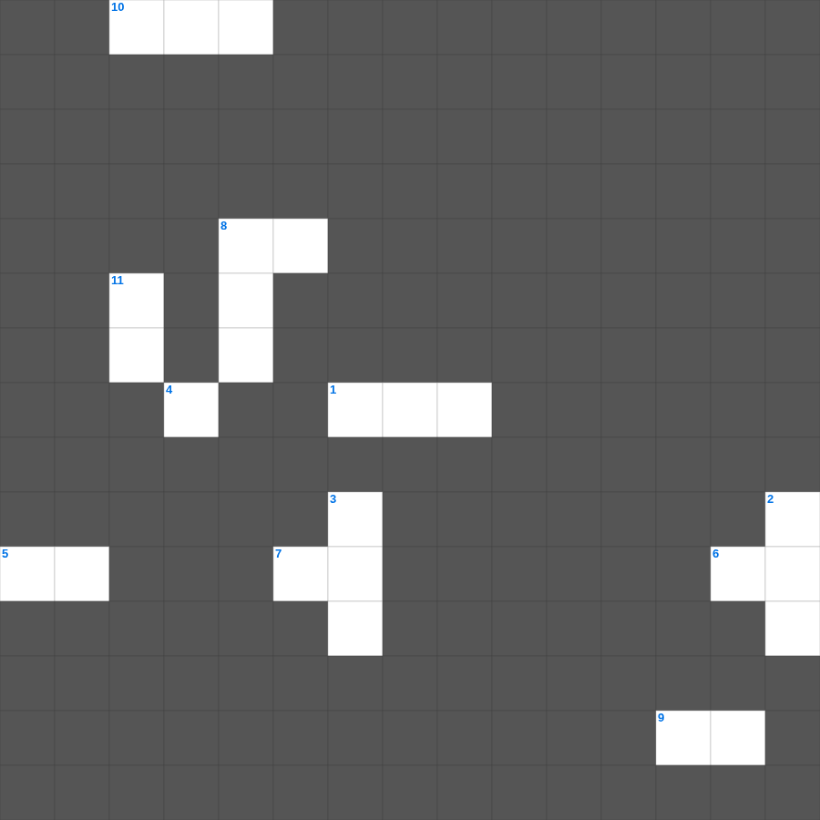

창세기: 천지창조
📌 서비스 정의
십자가로세로는 교회 주보와 주일학교에서 사용할 수 있는 성경 기반 가로세로 퍼즐 서비스입니다. 성경 인물, 사건, 핵심 구절을 바탕으로 제작되었습니다. 온라인 풀이 및 인쇄 기능을 제공합니다.
📖 창세기란?
창세기는 성경의 첫 번째 권으로, 하나님이 세상을 창조하신 이야기로 시작합니다. 아담과 하와, 노아의 방주, 아브라함과 이삭, 야곱과 요셉의 이야기를 포함하며 이스라엘 민족의 기원을 다룹니다. 창세기는 총 50장으로 구성되어 있으며, 천지창조부터 요셉의 이집트 생애까지를 기록합니다.
📚 창세기의 주요 사건·주제
천지창조와 에덴동산 · 노아의 홍수와 방주 · 바벨탑 사건 · 아브라함의 언약 · 야곱과 요셉의 이야기
창세기를 주제로 한 창세기 가로세로 퀴즈입니다. 12개의 단어를 맞춰보세요! 가로세로 낱말 퍼즐 형식으로 창세기의 핵심 내용을 재미있게 복습할 수 있습니다.

📝 가로 힌트
1. 요셉의 친동생
5. 야곱이 판 것
6. 아브라함의 아내
7. 하나님이 태초에 창조하신 것
8. 첫 사람 아담의 이름
9. 요셉이 팔려간 나라
10. 요셉이 입은 특별한 옷
📝 세로 힌트
2. 방주가 머문 산
3. 언약의 증거로 주신 것
4. 아브라함의 조카
8. 아브라함의 옛 이름
11. 아브라함의 아들
🧑🏫 교회 교육 자료 활용
이 퍼즐은 주일학교 교재 추천 자료로 활용할 수 있고, 주일학교 주보에 넣기 좋은 분량으로 구성되어 있습니다. 수업용 주일학교 교안에 활동지로 붙이거나, 예배 후 복습용 주일학교 공과교재로 바로 사용할 수 있습니다.
🏷️ 키워드
창세기 가로세로 퀴즈, 창세기, 십자가로세로, 성경퀴즈, 말씀퀴즈, 가로세로퍼즐, 주일학교 교재 추천, 주일학교 주보, 주일학교 교안, 주일학교 공과교재